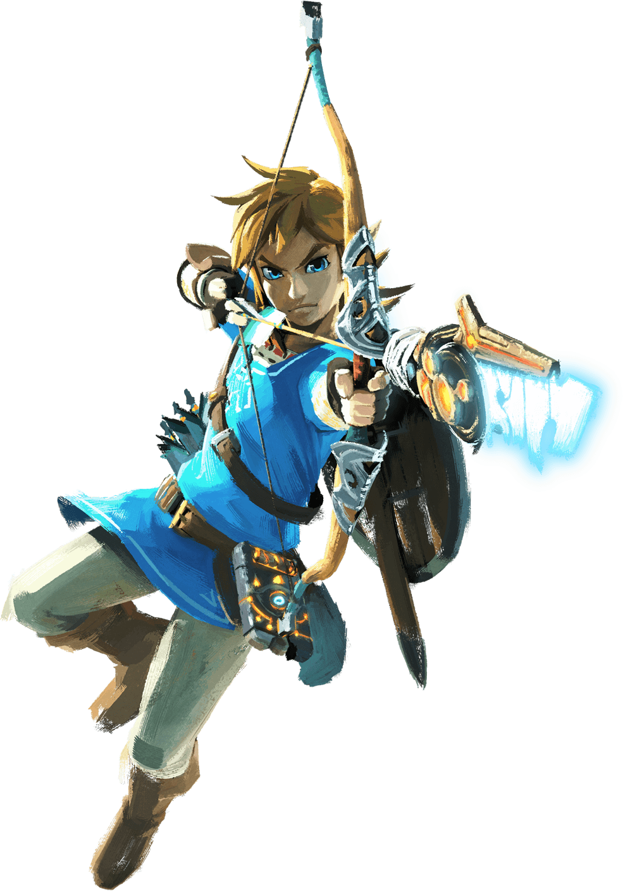
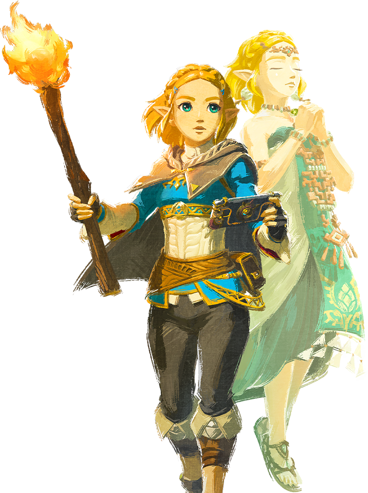
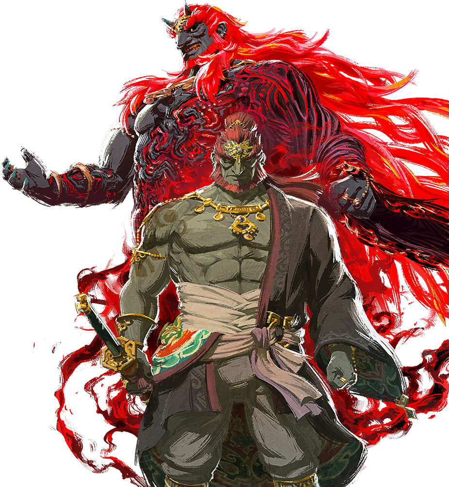

Link
Храбрый герой, избранный судьбой и богиней Хайлии.В тишине и без слов он встаёт против тьмы, чтобы защитить Хайрул и возродить надежду.

Zelda
Мудрая и отважная принцесса Хайрула,потомок древней богини.В её сердце живёт свет,способный рассеять тьму и направить героя.

Ganondorf
Повелитель тьмы и воплощение злобы. Его жажда власти безгранична, а сила способна разрушить само равновесие мира.